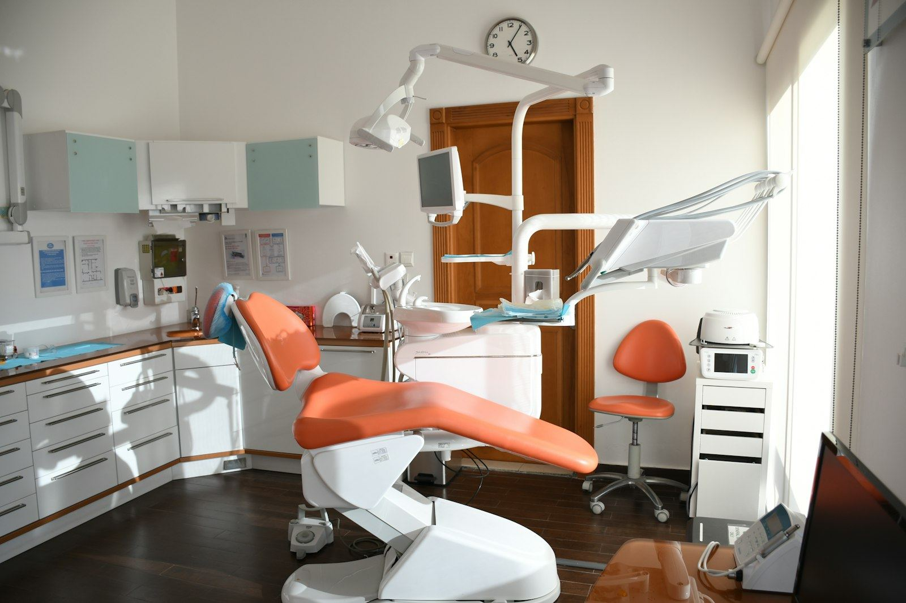

Family Dentistry in Pikesville and Eldersburg, Maryland
Welcome to Rao Dental
Two neighborhood offices, one careful approach. From a child's first checkup to crowns, Invisalign and Botox, we explain every step, work at your pace and see dental emergencies the same business day whenever possible.
Visit us
Our two locations
Pikesville · Baltimore County
Pikesville Dental Associates
3635 Old Court Rd, Suite 510
Baltimore, MD 21208
Mon, Wed, Thu 8 am – 5 pm
Tue, Fri 9 am – 5 pm
Eldersburg · Carroll County
Today's Dental at Eldersburg
2030 Liberty Rd, Ste 1
Eldersburg, MD 21784
Mon, Wed, Thu 8 am – 5 pm
Tue, Fri 9 am – 5 pm
Family dentistry
Care that feels close to home
Rao Dental brings two neighborhood practices together under one careful approach: we listen first, explain every option plainly and never rush your visit.
About our practiceWhat we do
Featured dental services
From a child's first checkup to veneers, Invisalign and Botox, every plan is built around your goals, your comfort and your schedule.
Cleaning & prevention
Exams, cleanings and preventive care to keep small problems small.
Learn moreRoot canal therapy
Gentle, precise care that relieves pain and keeps your natural tooth.
Learn moreCrowns & bridges
Custom restorations that protect a damaged tooth or replace missing ones.
Learn morePeriodontal care
Treatment for gum disease to protect the foundation of your teeth.
Learn morePediatric dentistry
Patient, friendly visits that help children feel at ease from the first checkup.
Learn moreDental veneers
Thin custom porcelain shells that reshape colour, length and proportion for a natural smile.
Learn moreTeeth whitening
Professional whitening for a brighter, even shade with comfort in mind.
Learn moreImplant restoration
Crowns and bridges placed on dental implants to restore a complete smile.
Learn moreInvisalign
Clear, removable aligners that straighten teeth gradually and discreetly.
Learn moreBotox
Therapeutic and esthetic Botox from a certified provider.
Learn moreFriendly faces
Meet our team
Our dentists and staff work together across both offices, so every visit feels familiar and unhurried.
Dr. Sumanya Venkat Rao
General Dentist · D.M.D., B.D.S.
Pikesville & Eldersburg
In practice since 2014 and experienced with children, adolescents, adults and patients with dental anxiety.
Dr. Robin J. Greenspan
D.D.S. · Georgetown University
Pikesville
More than 30 years practicing in the Baltimore area, treating patients like family with minimum discomfort.
Dr. Chaviva Golombeck
D.D.S. · University of Maryland
Pikesville
Certified in therapeutic and esthetic Botox and an Invisalign provider, focused on comfort and patient education.
The Rao Dental difference
Why choose our practice?
Gentle with nervous patients
Dr. Rao takes dental anxiety seriously. Every visit starts with a conversation, and treatment moves forward only when you are ready.
Same-day emergencies
We strive to see dental emergency patients within the same business day whenever possible.
The whole family, one practice
Children, teens, adults and grandparents, from first checkups to cosmetic care.
Two convenient offices
Pikesville in Baltimore County and Eldersburg in Carroll County.
Insurance help
Most insurance plans are accepted. We verify your benefits before your first visit.
Rated 5.0 by patients
540 patient reviews for our Eldersburg practice.
Patient testimonials
What our patients say
“Love how gentle and informative Dr. Rao is.”
“I had the BEST experience at Pikesville Dental. They have very professional staff and put me at ease. I highly recommend them to anyone looking for a family dentist.”
“I was seen in a timely manner, everyone was friendly and the appointment was completed in a timely manner.”

Our offices & technology
Comfortable offices, modern care
Both offices are warm, welcoming spaces with friendly teams who treat your time, and your nerves, with respect. Pikesville Dental Associates is in Suite 510 on Old Court Road, and Today's Dental at Eldersburg is on Liberty Road.
Digital X-rays · Clear images with lower radiation than traditional film.
Intraoral cameras · See what we see, so every recommendation is easy to understand.
Modern equipment · Up-to-date equipment and techniques across general, restorative and cosmetic dentistry.
Explore our technologyInsurance & financing
Care that fits your plan
Most dental insurance plans are accepted. Tell us your plan when you book and we will verify your benefits before your first visit, so there are no surprises.
Need help fitting treatment into your budget? Ask our front desk about payment plans and financing options before treatment begins.
- Most PPO dental insurance plans
- Cash and personal checks
- Visa, Mastercard, Discover & American Express
- Financing options. Ask our front desk
Good to know
Frequently asked questions
Which office should I choose?
Whichever is more convenient. Pikesville Dental Associates is on Old Court Road in Baltimore County, and Today's Dental at Eldersburg is on Liberty Road in Carroll County. Dr. Rao sees patients at both.
Do you accept my insurance?
Most dental insurance plans are accepted. Tell us your plan when you book and we will verify your coverage before you come in.
What if I have a dental emergency?
Call your office right away. We strive to see emergency patients within the same business day whenever possible.
Do you see children?
Yes. We care for children, teens and adults, and we keep first visits friendly and relaxed.
I am nervous about the dentist. Can you help?
Absolutely. Dr. Rao is experienced with anxious patients. We explain each step, you set the pace, and we pause whenever you ask.
Are Invisalign and Botox available at both offices?
Please call the office you plan to visit and our team will confirm availability and schedule a consultation.
Ready for a healthier smile?
New patients are always welcome at both offices.